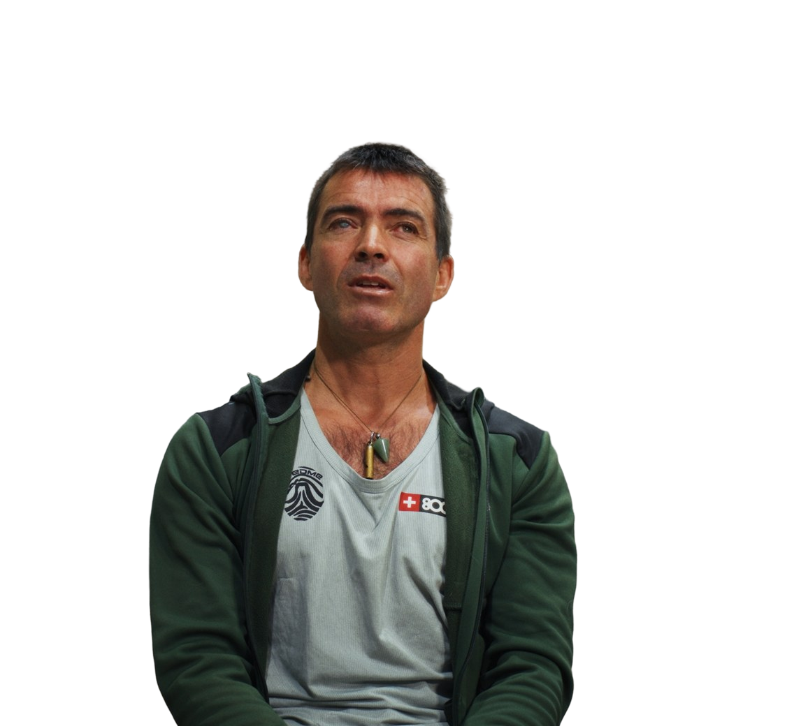
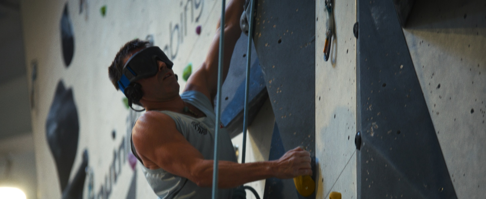
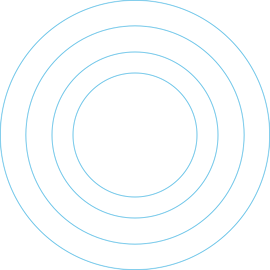
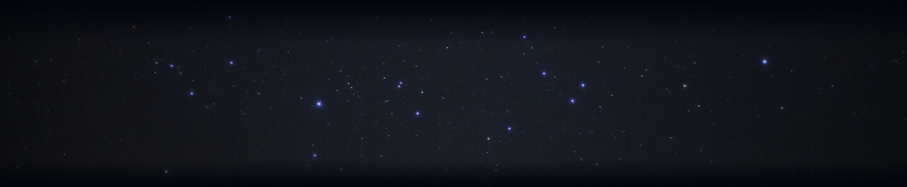
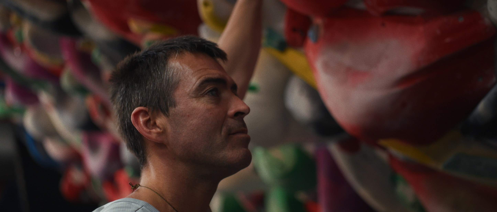
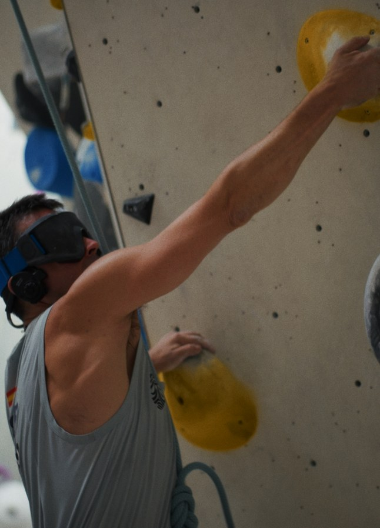
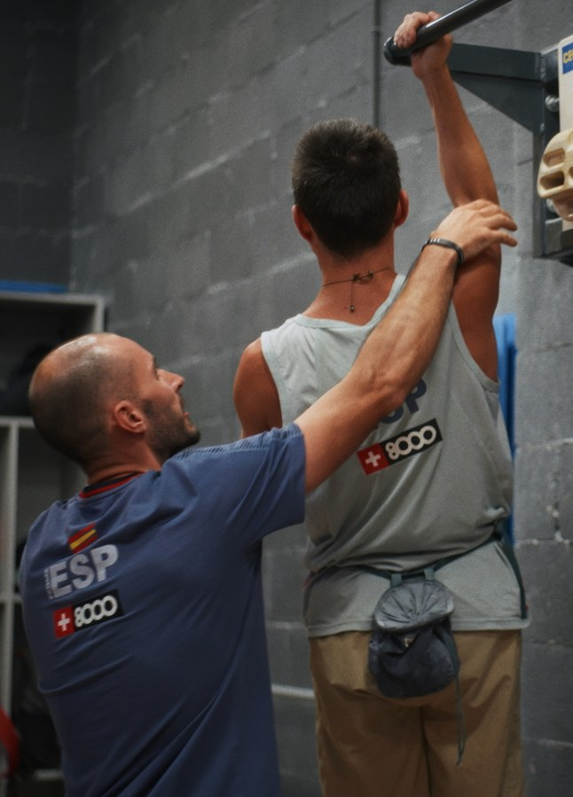
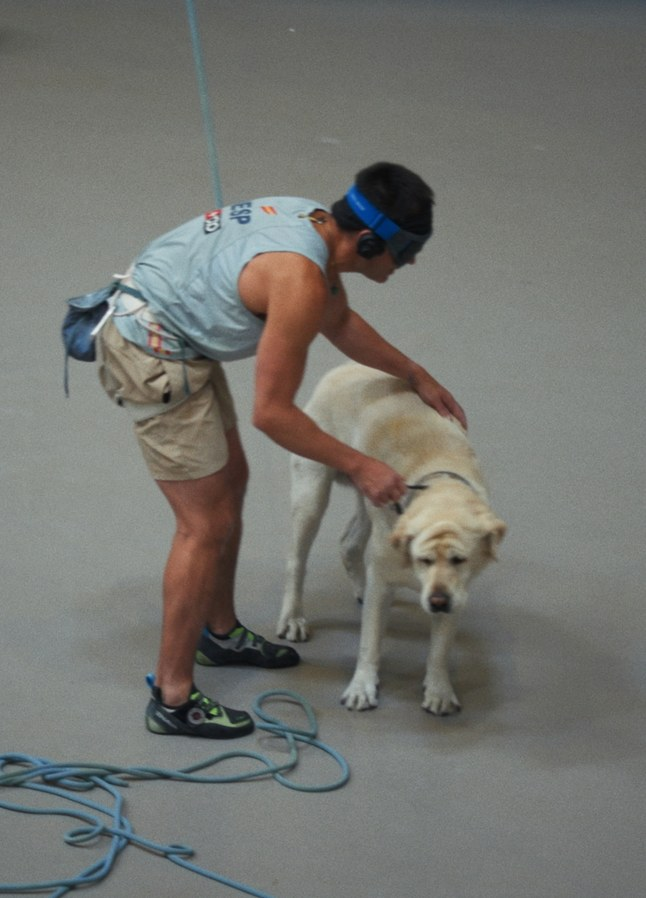
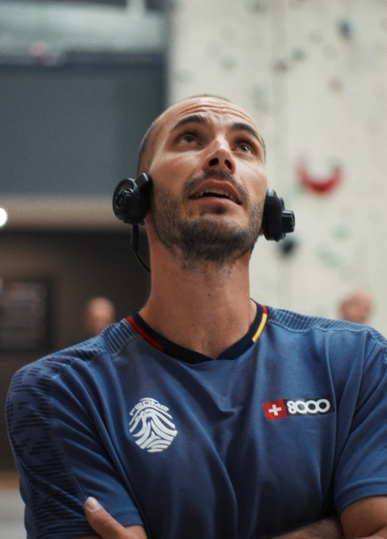

En colaboración con CaixaBank

Javier Aguilar, escalador:
“Caer significa aprender”
▼ Ver reportaje completo
Para llegar a la élite de cualquier deporte hay que caerse y ser capaz de levantarse muchas veces. En el caso de la escalada, además, esto es algo literal. Cada vez que una mano no encuentra la presa o un pie pierde el apoyo toca volver a intentarlo. Javier Aguilar es muy consciente de ello. Con una larga trayectoria deportiva a sus espaldas, ha aprendido a convertir cada dificultad en aprendizaje. Ahora, su esperanza está en los Juegos Paralímpicos de 2028. Y está dispuesto a levantarse cuantas veces haga falta para cumplir su sueño.
La relación de Javier con el deporte comenzó mucho antes de descubrir la escalada. En los Juegos de Sídney 2000 representó a España en natación adaptada y no fue hasta tres años después cuando la escalada se convirtió en su nueva pasión. Empezó al aire libre, trepando en la roca, acompañado de amigos. Aquel deporte, nos confiesa, le hacía sentir algo especial. El contacto con las formas de la naturaleza, las texturas, el reconocimiento de cada presa a través del tacto. Y lo que comenzó como una afición terminó convirtiéndose en un nuevo proyecto de alto rendimiento.

“Yo empecé escalando en roca, con amigos, en un entorno natural, y fue así como me enamoré de este deporte”, comenta Javier Aguilar
La escalada exige una preparación física muy intensa y en el caso de una persona ciega como Javier cada movimiento requiere también una labor de anticipación y memoria. Necesita registrar los apoyos, identificar las presas y construir mentalmente el recorrido. “Para un escalador, casi el 99% son caídas”, nos explica. “Y caer significa aprender, aprender los movimientos, saber dónde va el pie, la cadera, la mano...”, continúa. Por eso, tras cada intento, Javier repasa lo que ha podido fallar una y otra vez. “Después de la caída trato de visualizar esa vía y lo hago mientras voy hacia casa, en los momentos de descanso”
Toni Curiel, su entrenador, confiesa que desde que conoció a Javier percibió su energía mental y su capacidad de crecimiento: “Lo que más me llamó la atención fue la capacidad que tiene de resistencia”, nos explica “Solo tenía que pulir un poco la fuerza y la velocidad de ejecución de los movimientos”. En la escalada, la precisión es fundamental, pero también lo es saber cuándo acelerar y cuándo detenerse para recuperar fuerzas. Por eso, Toni ha trabajado con Javier para que pueda aprovechar mejor sus capacidades y gestionar cada movimiento con mayor eficacia.

El apoyo que permite seguir escalando
La trayectoria de Javier Aguilar demuestra que el talento y la constancia necesitan también unas condiciones adecuadas para desarrollarse. La escalada de alto nivel exige recursos para entrenar en las mejores condiciones y el respaldo de CaixaBank contribuye a que los atletas paralímpicos, como Javier, puedan centrarse en su evolución deportiva y perseguir sus objetivos.
Detrás de cada ascensión hay un equipo
En la escalada, la coordinación entre cada miembro del equipo es fundamental. Eso lo sabe reconocer CaixaBank, que comparte esa visión del deporte como un esfuerzo colectivo y apoya a los atletas para que puedan desarrollar su potencial con el acompañamiento y los recursos que necesitan. Porque detrás de cada logro hay muchas personas y entidades que hacen posible llegar más alto.
Una apuesta por el talento sin barreras
El recorrido de Javier refleja una capacidad extraordinaria para adaptarse, aprender y seguir creciendo. CaixaBank respalda historias como la suya a través de su alianza con el Comité Paralímpico Español, contribuyendo a que los deportistas encuentren oportunidades para competir y alcanzar nuevas metas.
Impulsar historias que inspiran
Cada deportista tiene una historia propia, pero todas comparten valores como la perseverancia, la disciplina y la capacidad de superar dificultades. CaixaBank apuesta por dar visibilidad a estas trayectorias y acompañar a quienes las protagonizan, convencido de que el deporte no solo ofrece grandes resultados, sino también referentes capaces de inspirar a toda la sociedad.
Un aspecto primordial para un escalador paralímpico es la confianza con su guía. Y es José Miguel Martín quien le transmite a Javier Aguilar toda la información sobre las vías para que pueda avanzar con seguridad y rapidez. Día tras día, entrenamiento tras entrenamiento, los dos han afinado su comunicación. “Hemos estado trabajando en nuestro propio código para que nos entendamos más rápidamente”, explica José Miguel. Su labor pasa, por ejemplo, por indicarle dónde colocar los pies para mantenerse estable y dónde encontrar los siguientes apoyos para las manos, adaptando las instrucciones a la manera de escalar del atleta.
La comunicación también se apoya en referencias que han incorporado a su rutina. “Usamos un lenguaje concreto relacionado con las agujas del reloj”, cuenta el propio Javier. La coordinación entre ambos permite que el escalador construya una imagen mental de la vía y tome las decisiones cuando se encuentra en plena ascensión. Antes de competir, además, el trabajo se prepara al detalle. Estudian los movimientos, ensayan las posiciones más complicadas y buscan que Javier llegue a la pared con la mayor información posible.

“Cuando competimos, tenemos muy poco tiempo por lo que hemos de ser muy concisos y tengo que buscar los métodos que mejor se adecúen a cómo escala Javi”, dice su guía, José Miguel Martín
El camino hacia la élite ha tenido también sus contratiempos. En 2025, Javier tuvo que afrontar lesiones que limitaron el ritmo de sus entrenamientos. Y para una persona con un nivel de autoexigencia tan alto, aceptar esos paréntesis no es fácil. Toni Curiel recuerda que durante la recuperación su cabeza seguía pidiéndole más, “era frustrante no poder apretar todo lo que quisieras apretar porque había algo que lo limitaba”, explica. Pero esa es parte de la labor de las personas que lo apoyan, ayudarle a gestionar la frustración. Tanto cuando un movimiento no sale como esperaba como cuando la propia vida pone obstáculos en el camino del deportista.
El soporte de su entorno es fundamental, como lo es el que le facilita cubrir las necesidades logísticas y económicas de una disciplina que requiere desplazamientos, instalaciones y vías preparadas para entrenar al máximo nivel. Javier vive en Granada, pero debe viajar habitualmente para completar su preparación y competir. Para ello, y para mucho más, el apoyo de entidades como CaixaBank es esencial, ya que le permite disponer de mejores condiciones para entrenar y competir. “Gracias a ellos podemos hacer un poco mejor nuestro deporte”, reconoce.

“El nivel de autoexigencia de Javier es superalto; cuando falla un movimiento está continuamente repitiéndolo en su cabeza”, comenta su entrenador
Todo ese trabajo ha tenido su recompensa. Javier ha llegado a ser, incluso, campeón del mundo, un logro que reconoce su talento y el esfuerzo acumulado durante años. Para Toni Curiel, su entrenador, aquel triunfo fue la recompensa a una forma de entender el deporte, la de alguien que siempre quiere mejorar y que rara vez se conforma con lo conseguido. Porque detrás de ese título hay muchas horas de entrenamiento, vías repetidas, movimientos memorizados y una coordinación cada vez más afinada entre el deportista y su equipo.
Lo cierto es que cada medalla reconoce todo ese trabajo que no se ve desde fuera, la preparación y la capacidad de volver a intentarlo después de cada caída. Ahora, Javier tiene una nueva meta en el horizonte. La escalada paralímpica debutará en los Juegos de Los Ángeles 2028 y, para él, la posibilidad de regresar a una cita que ya conoce tiene un significado especial. Han pasado más de dos décadas desde su participación en Sídney, entonces en natación, y poder volver al escenario paralímpico sería una experiencia única. “Estar en otro deporte diferente, poder llegar a ese nivel, me hace una ilusión increíble”, confiesa.




Pero lo que de verdad sustenta el sueño paralímpico es su amor por el deporte. Y esta es una pasión que, más allá de los resultados, Javier quiere conservar siempre. Porque, realmente, Javier disfruta escalando. “Si yo dejara de escalar competitivamente como hasta ahora, lo haría en las rocas, siempre me va a quedar eso”, nos confiesa. Ese tacto de las rocas en plena naturaleza siempre será su vocación.
No obstante, ahora mismo, Javier Aguilar continúa en un nivel muy alto y cada entrenamiento forma parte de la preparación para una oportunidad que le ilusiona profundamente. En ese camino, el respaldo de su equipo y las ayudas de entidades como CaixaBank resultan esenciales para que pueda seguir entrenando, competir al máximo nivel y acercarse a su gran objetivo. Todavía queda trabajo por delante, pero Javier sabe hacia dónde quiere escalar. La cima está en Los Ángeles 2028.